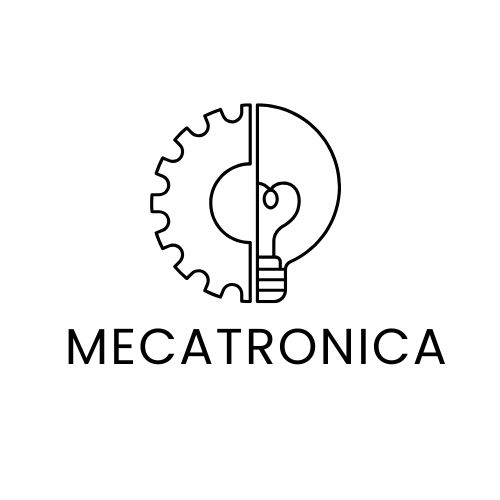

DESCRIPCION
EL proyecto consiste en desarrollar una camara con inteligencia artificial utilizando el modulo ESP32. el sistema permitira capturar imagenes y procesarlas para realizar funciones como reconocimiento de objetos, deteccion de movimientos o monitoreo en tiempo real.
iR A INFORMACION.jpg.jpeg)
JUSTIFICACION
Este proyecto se realiza con el fin de aplicar conocimientos de electrónica, programación y automatización en una solución tecnológica innovadora.El uso del ESP32-CAM permite comprender cómo funcionan las cámaras inteligentes y cómo la inteligencia artificial puede utilizarse en áreas de seguridad, monitoreo y automatización.También fomenta el trabajo en equipo,la creatividad y el desarrollo de habilidades tecnológicas importantes para el futuro académico y profesional.
Proyecto
INFORMACION PREVIA
El ESP32-CAM es un microcontrolador que incorpora conectividad WiFi, Bluetooth y una cámara integrada, permitiendo desarrollar proyectos de visión artificial y monitoreo remoto. La inteligencia artificial aplicada a cámaras permite analizar imágenes y reconocer patrones mediante programación y algoritmos básicos. Para este proyecto se requieren conocimientos de programación, conexión de componentes electrónicos y manejo de plataformas de desarrollo como Arduino IDE.
GALERIA IOT